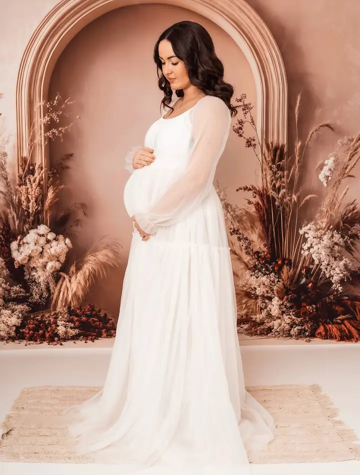
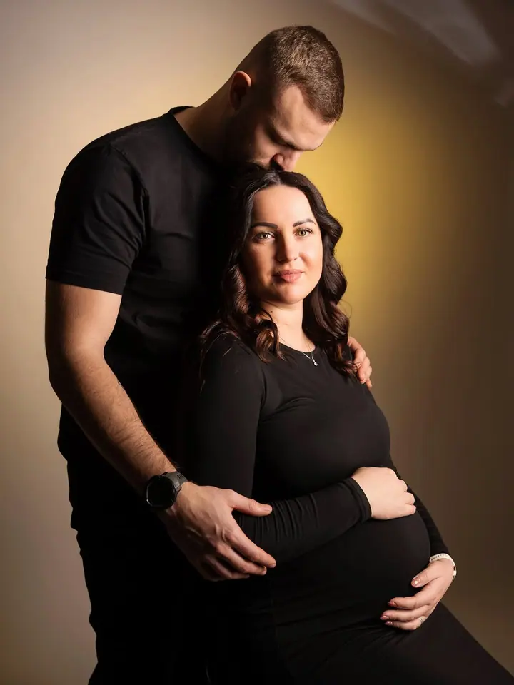
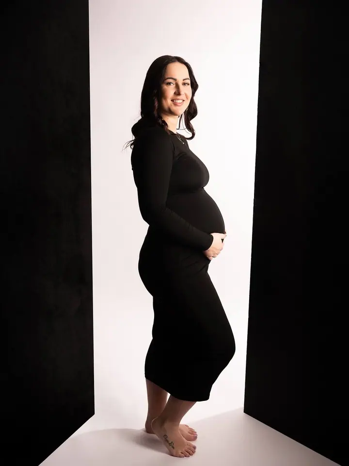
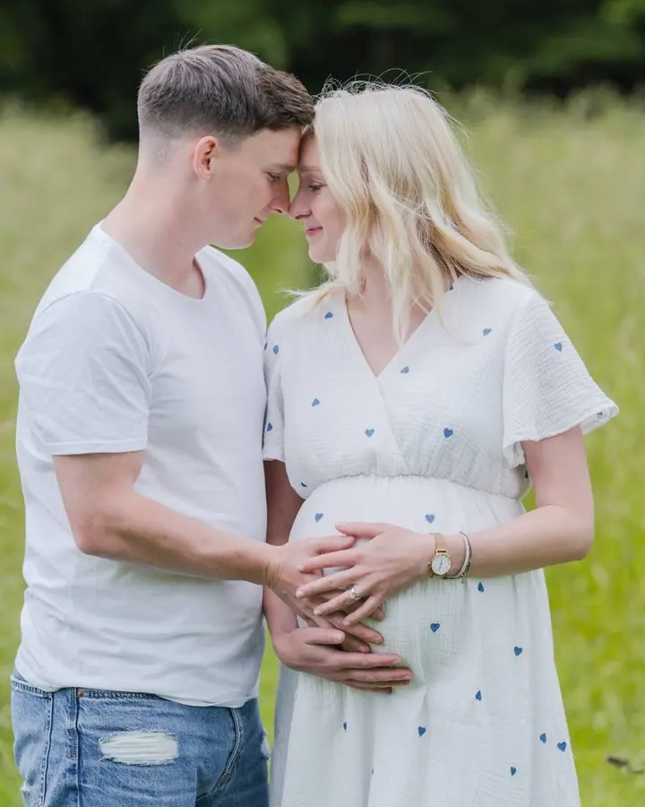
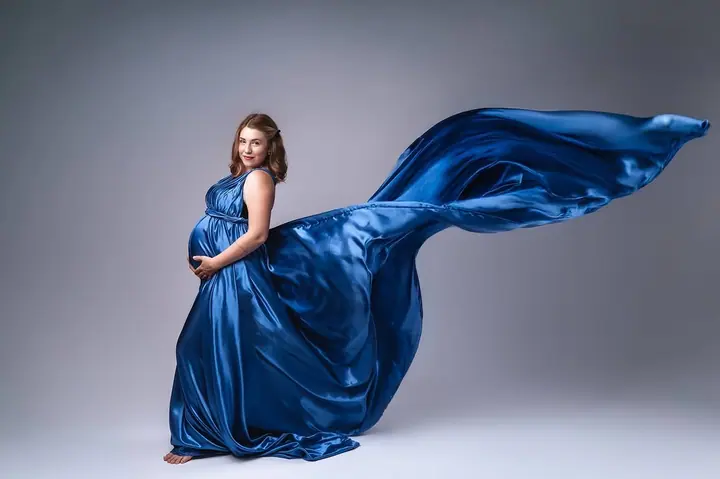
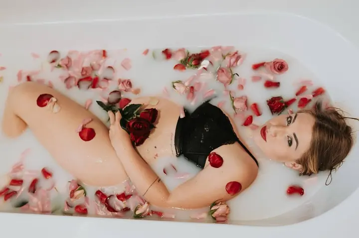

Těhotenské focení
Krásu těhotenství zachycuji s něhou a elegancí. Fotíme v mém ateliéru, nebo venku v přírodě kolem Třince a Českého Těšína. Šaty na focení vám můžu zapůjčit.





Jmenuji se Sabina Kos a jsem rodinná fotografka z Beskyd. Ve svém ateliéru v Třinci-Neborech fotím těhotenství, rodiny, páry i portréty. Když je hezky, vyrazíme spolu ven do přírody.
Více o mně
„Díky velké podpoře mé rodiny to vypadá, že se začíná plnit ten velký sen malé holčičky.“
— Sabina Kos
Krásu těhotenství zachycuji s něhou a elegancí. Fotíme v mém ateliéru, nebo venku v přírodě kolem Třince a Českého Těšína. Šaty na focení vám můžu zapůjčit.
Rodinné focení v ateliéru nebo venku. Během roku chystám i vánoční a jarní focení s kulisami a rekvizitami.
Ateliérové portréty a párové focení, ve dvou nebo jen vy sama. Pohodově, s hlídáním světla a s fotkami, ve kterých se poznáte.
Fotím přímo v mateřských a základních školách: vánoční a jarní focení, třídní fotky, tabla i karnevaly. Záleží mi na tom, aby fotky byly přirozené a hravé.
Už jako malá holka jsem na svůj starý Nikon fotila všechno, co se kolem mě mihlo. Zjišťovala jsem, co všechno foťák umí, a učila se s ním pracovat. Postupně jsem si našetřila na lepší výbavu a začala se víc věnovat lidem.
Svůj první ateliér jsem si postavila uprostřed našeho obýváku. Zkoušela jsem tam různé způsoby svícení a často jsem si byla modelkou sama, takže mám ze začátků spoustu autoportrétů. Od té doby se hodně změnilo: vdala jsem se, narodil se nám syn a postavili jsme dům. A v něm konečně vlastní ateliér.
Dnes se věnuji hlavně těhotenskému, rodinnému a párovému focení v ateliéru i venku. Fotím také ve školách a školkách a chystám vánoční a tematická focení. U každé fotky se snažím zachytit opravdové emoce a připravit vám prostředí, ve kterém se budete cítit uvolněně.
Napište mi přes formulář, e-mailem nebo na WhatsApp. Společně vybereme balíček Mini, Standard nebo Maxi, případně domluvíme něco na míru.
Domluvíme termín a místo, tedy můj ateliér v Neborech, přírodu v okolí Třince, nebo obojí. Poradím vám s oblečením a můžete si u mě půjčit šaty na focení.
Podle balíčku fotíme zhruba 45 minut až hodinu a půl, u Maxi tak dlouho, jak bude potřeba. V klidu, bez spěchu a s prostorem na to, abyste se rozkoukali.
Z hotových fotek si vyberete ty, které se vám líbí nejvíc, a já je profesionálně upravím. Pokud budete chtít víc fotek, než obsahuje balíček, každá další stojí 150 Kč.
Balíček Mini stojí 1 500 Kč a obsahuje 10 fotografií, Standard 2 500 Kč s 20 fotografiemi a Maxi 3 000 Kč s 30 fotografiemi. Každá další fotka nad rámec balíčku je za 150 Kč.
Buď v mém ateliéru v Třinci-Neborech, nebo venku v přírodě v okolí Třince a Českého Těšína. U balíčku Maxi můžeme ateliér a venkovní focení i zkombinovat. U balíčku Standard je doprava v okolí Třince a Českého Těšína zdarma.
Nevadí, šaty vám ráda zapůjčím zdarma. Vybrat si můžete ještě před focením.
Ano. Dárkový poukaz můžete koupit na konkrétní balíček nebo na vlastní částku. Pošlu ho e-mailem v PDF, nebo si tištěný vyzvednete osobně v Třinci či vám ho pošlu poštou.
Ano, fotím v mateřských i základních školách: vánoční a jarní focení, třídní fotky, tabla i karnevaly. Cena je podle dohody, od 300 Kč za dítě.
kossabina@seznam.cz
Třinec · Český Těšín · Frýdek-Místek